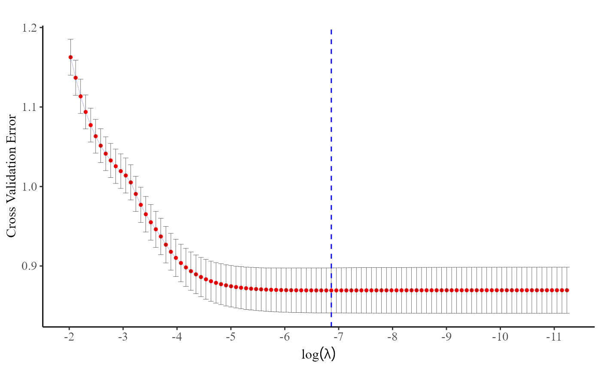
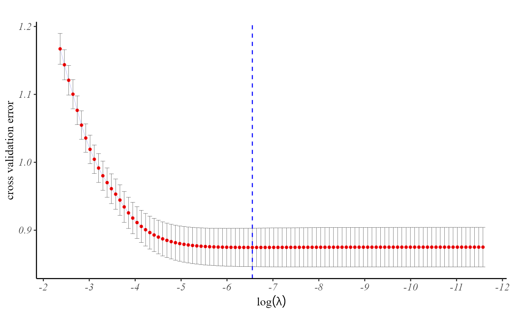

plot.cv.ppLasso.Rdreturn the plot of the cross entropy Loss from a cv.ppLasso or cv.gr_ppLasso object
a cv.gr_ppLasso object.
whether the horizontal axis be on the log scale.
whether draws a vertical line at the value where cross-validaton error is minimized.
data(GLM_Data)
data <- GLM_Data$data
Y.char <- GLM_Data$Y.char
prov.char <- GLM_Data$prov.char
Z.char <- GLM_Data$Z.char
fit <- cv.pp.lasso(data, Y.char, Z.char, prov.char, nfolds = 10)
plot(fit)

data(GLM_Data)
data <- GLM_Data$data
Y.char <- GLM_Data$Y.char
prov.char <- GLM_Data$prov.char
Z.char <- GLM_Data$Z.char
group <- GLM_Data$group
fit <- cv.grp.lasso(data, Y.char, Z.char, prov.char, group = group, nfolds = 10)
plot(fit)
